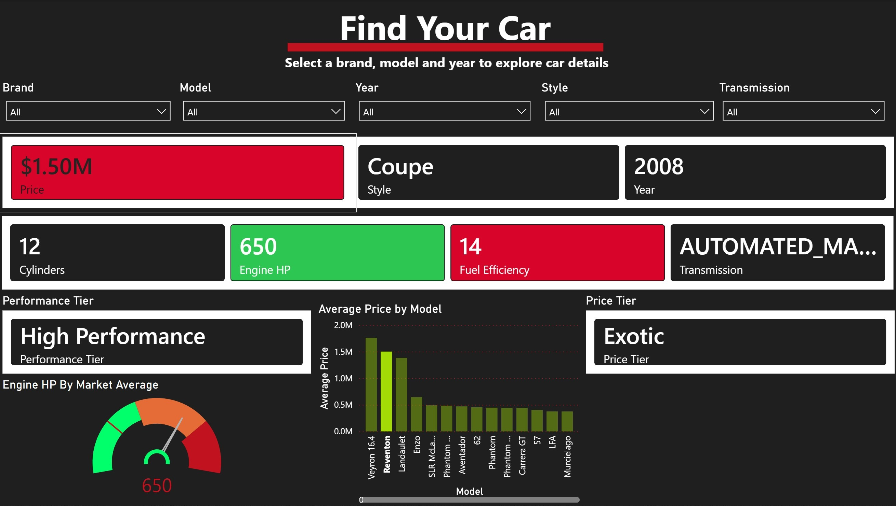
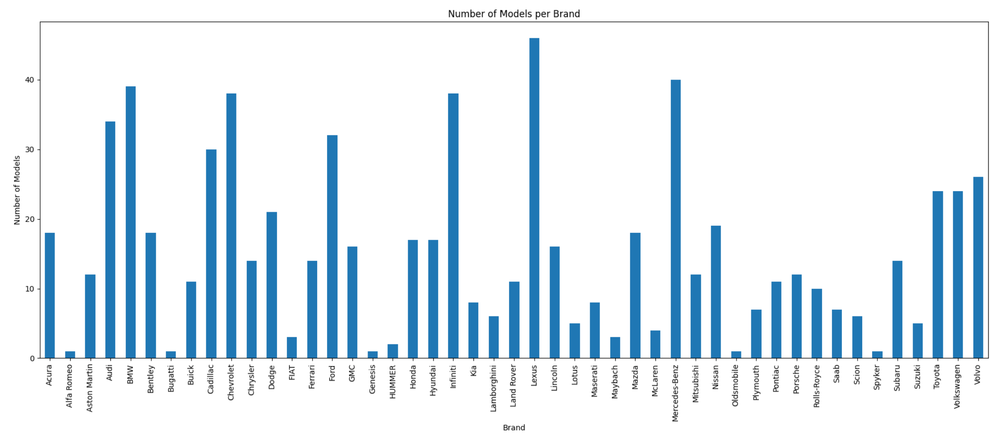
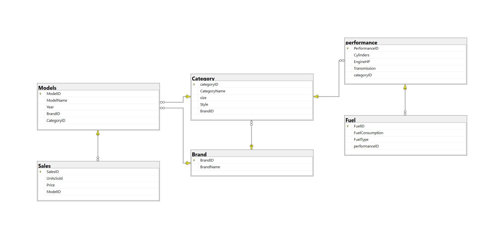

Python | Pandas | Data Cleaning

I used Python and Pandas to explore the automotive dataset, group car models by brand and create visualizations that reveal brand variety and market coverage.

I designed and built a structured SQL database for automotive data,including tables for brands, models, categories, performance, sales and fuel information.
Power BI | Dashboard Design
I created an interactive Power BI dashboard to visualize automotive data,using filters, KPI cards and charts to present car performance, pricing,fuel efficiency and market trends.